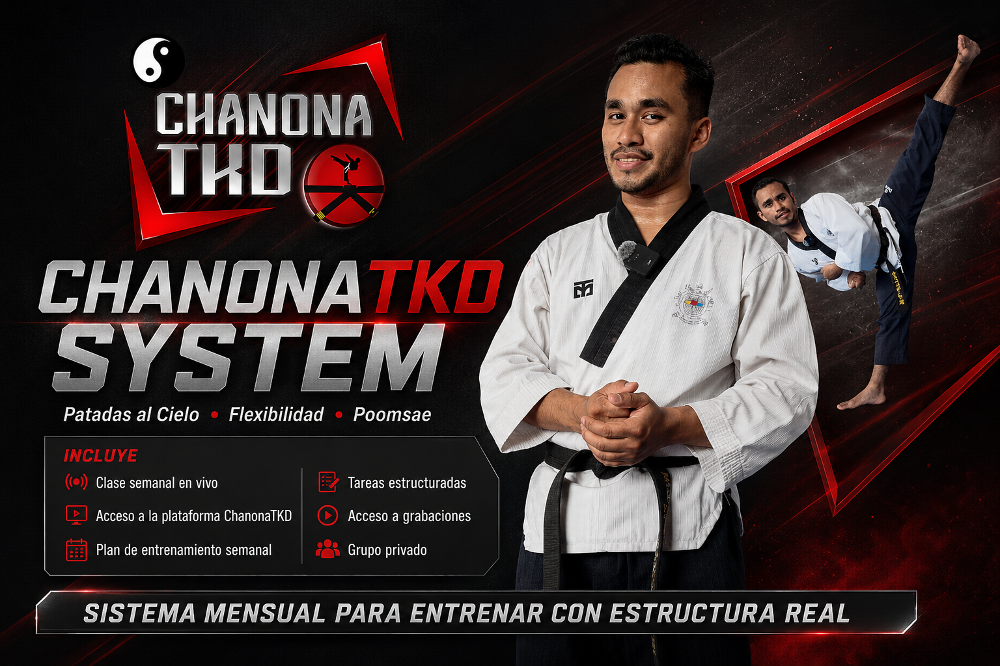

Organiza tu práctica desde las bases o retoma con una dirección clara según tu etapa.
ENTRENA CON DIRECCIÓN
Ten una ruta clara para dejar de entrenar al azar.
¿Estás comenzando, retomando el Taekwondo o preparándote para examen o competencia? System te ofrece una ruta por niveles y nuevas clases cada semana para entrenar con dirección desde donde estés.

Entrenamiento con dirección, en tus horarios.Ruta por niveles · Poomsae · Pateo · Flexibilidad
CÓMO FUNCIONA
Sabes qué entrenar y puedes hacerlo a tu ritmo.
Ambas versiones siguen la misma ruta: una estructura por niveles que combina el trabajo de flexibilidad, pateo y Poomsae sin depender de horarios de clases en vivo.
Una de Poomsae, una de pateo y una de flexibilidad.
Se publican en la plataforma y puedes verlas, pausarlas o repetirlas en tus horarios.
Las clases anteriores de System permanecen disponibles mientras la membresía esté activa.
EXPERIENCIA DE ENSEÑANZA
¿Por qué entrenas y todavía no ves el progreso que buscas?
¿Tu flexibilidad no avanza, tu patada no sube o tu Poomsae se siente estancado? Elige lo que más te identifica y descubre cómo abordamos estos retos técnicos con el Método ChanonaTKD. Las tres clases son una muestra de enseñanza; puedes consultar el programa sin terminarlas.
Clase 1 de 3FlexibilidadCLASE GRATUITA
DOS VERSIONES DE SYSTEM
La misma ruta. Elige el acceso que necesitas.
En Esencial y Full recibes estructura por niveles y tres clases nuevas cada semana: Poomsae, pateo y flexibilidad. Las ves cuando quieras y puedes regresar a las anteriores mientras sigas inscrito.
Si además quieres estudiar toda la colección de clases y explicaciones de la Academia Digital, Full agrega ese acceso mientras tu membresía esté vigente.
Importante: Esencial no incluye toda la Academia Digital. El acceso a Academia dentro de Full termina al dejar de estar activa la membresía. Comprar Academia por separado da acceso de por vida.
Por ejemplo, puedes seguir tu ruta durante la semana, revisar una clase de pateo y volver a una explicación de flexibilidad cuando tengas tiempo. No necesitas coincidir con una clase grupal en vivo.
System Esencial
Ruta de entrenamiento por niveles y tres clases nuevas por semana que puedes consultar en tus horarios.
Mensualidad$950 MXN$69 USD · €65 EUR / mes
Consultar System EsencialSystem Full
Todo lo de Esencial, más acceso a toda la Academia Digital solo mientras tu membresía Full esté activa.
Mensualidad$1,350 MXN$99 USD · €89 EUR / mes
Consultar System FullPreguntas frecuentes
¿Qué cambia entre Esencial y Full?
Ambos incluyen la misma estructura por niveles y tres clases nuevas semanales: Poomsae, pateo y flexibilidad. Full añade el acceso a toda la Academia Digital mientras la membresía esté activa; Esencial no lo incluye.
¿Debo conectarme a una clase grupal en vivo?
No. Las clases nuevas de System se publican para que las veas cuando tú puedas. No hay una clase grupal semanal incluida.
¿Puedo ver clases anteriores?
Sí. Las clases de System publicadas anteriormente permanecen disponibles mientras tu membresía esté activa.
¿El acceso a Academia dentro de Full es vitalicio?
No. Solo permanece activo mientras tu membresía Full esté vigente. Si compras Academia Digital por separado, el acceso sí es de por vida.
¿Y si estoy empezando o regreso después de años?
La ruta por niveles está pensada para ayudarte a organizar tu entrenamiento desde la etapa en la que te encuentres.
¿Los precios internacionales cambian con el tipo de cambio?
No. Las tarifas publicadas en MXN, USD y EUR son precios fijos del programa, no conversiones diarias. Escribe desde qué país nos contactas para orientarte sobre la inscripción.
Empieza con una ruta clara.
¿No sabes cuál versión elegir? Cuéntame desde qué nivel comienzas y te explicaré la diferencia.
Elegir mi versión de SystemOTRAS FORMAS DE COMENZAR